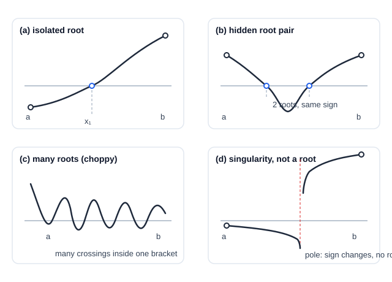

Bisection Method
| This documentation was generated with the assistance of AI. Please report any inaccuracies. |
Bisection is the root-finding method that cannot fail: given an interval where a continuous function changes
sign, it halves that interval on every iteration until the root is isolated to the desired accuracy. It is
described in Press et al., 2007, Section 9.1 (page 445), and implemented as
BisectionSingleRootEstimator in the com.irurueta.numerical.roots package.
Bracketing a root
A root is bracketed by two points and when and have opposite signs
— by the intermediate value theorem, a continuous function must cross zero somewhere in between. Every
bracketed root finder in this package (see also Secant and False Position Methods,
Ridder’s Method, and Brent’s Method (Root Finding)) shares this same
prerequisite, and the same automatic bracket-search routine: given two starting points, it repeatedly moves
whichever one has the smaller further away (by a factor of 1.6) until the function changes sign
or the search gives up after 50 tries.

A bracket is only as trustworthy as the assumptions behind it. (a) is the well-behaved case bisection is built for: a single, cleanly isolated root. (b) shows why a single sign change at the endpoints is not the same guarantee as "exactly one root inside" — an even number of roots can hide between two same-signed endpoints entirely undetected. (c) is the opposite danger: a sufficiently choppy function can pack far more roots into a bracket than a naive search expects. (d) is the case called out below — bisection cannot distinguish a genuine root from a singularity where the function’s sign flips without ever passing through zero.
Bisection additionally tolerates one case the other methods do not handle as gracefully: if the interval straddles a singularity rather than a genuine root (e.g. ), bisection will still converge — to the singularity itself, since that is indistinguishable numerically from a genuine sign change. This is rarely a problem in practice, since evaluating near a singularity gives a very large, not a very small, result.
The algorithm
Evaluate the function at the interval’s midpoint and use its sign to replace whichever endpoint shares that sign — halving the bracket on every single iteration, no more and no less:
If the root is known to lie within an interval of size , the number of iterations needed to reach a target tolerance is known in advance:
This is linear convergence — each additional significant figure costs a comparable, fixed amount of further work — slower than the superlinear methods described elsewhere in this package (Secant and False Position Methods, Ridder’s Method, Brent’s Method (Root Finding), Newton-Raphson Method), but utterly predictable and impossible to derail.
Library implementation
BisectionSingleRootEstimator extends BracketedSingleRootEstimator, which provides:
-
computeBracket(…)(several overloads) — automatically searches for a bracket starting from given point(s). -
setBracket(min, max)— supply an already-known bracket directly.
and adds a single tunable parameter:
-
getTolerance()/setTolerance(double)— the interval width to converge to; default1e-6.
Up to JMAX = 50 iterations are attempted — enough to reach roughly of the
initial bracket width, close to full double-precision accuracy. After estimate() completes, getRoot()
returns the estimated root.
| Press et al., 2007 does not recommend bisection as a first choice for well-behaved functions — Brent’s method or Ridder’s method converge much faster in that case. Reach for bisection when a function is choppy, discontinuous, or otherwise badly behaved enough that faster methods cannot be trusted, or simply when the guarantee of unconditional convergence matters more than speed. |
Example
final var listener = new SingleDimensionFunctionEvaluatorListener() {
@Override
public double evaluate(final double point) {
return point * point - 4.0;
}
};
final var estimator = new BisectionSingleRootEstimator(listener, 0.0, 10.0, 1e-9);
estimator.estimate();
final var root = estimator.getRoot(); // approximately 2.0| Class | Javadoc | Source |
|---|---|---|
|
||
|